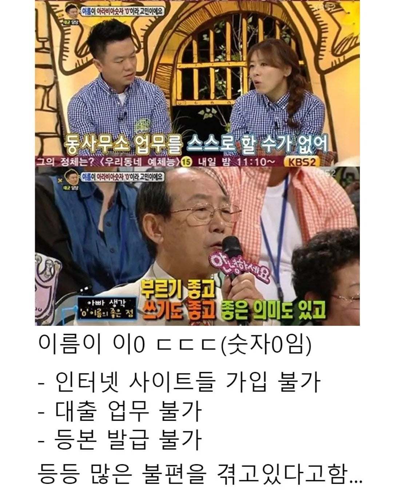
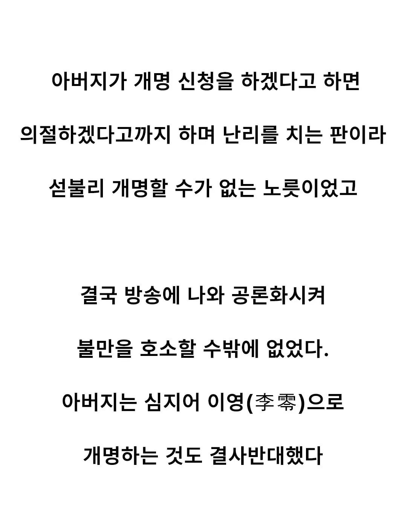

도대체 왜....


도대체 왜....
아니 근데 민증까지 있는데 대본이야
공일공 ㅋㅋ
본인 이름으로 하는거면 몰라. 자식 이름이 장난이야?
하… 의절해 비읍 신 새끼야
의절이 문제가 아니라
성인으로서의 자기결정권을 구사하지 못하는 문제지
부모님이 뭐라고
이게 맞다.
의절 이지랄 때문에 지 이름 하나 못바꿀 정도면 부모꼭두각시의존증으로 봐도 되는거 아니냐?
꼰대 좆된다 십ㅋㅋㅋ
먼시발 레어닉 쌀팔이 하는줄아나
딸 인생이 막혀있는게 보이는데도 고집이여 미친놈이
거의 50년 전인데,
남자가 가장 똑똑하고, 미래지향적인 나이였을텐데 어째서 저렇게...
아니 숫자로 이름 짓는게 됨?
늙크크 똥고집 씨이발 ㅋㅋ
독립할 능력이 있으면 진즉 독립하고 바꿨겠지. 용돈받으면 어쩔 수 없다.
대충 무당같은 사람 섭외해다가 이름 때문에 안풀린다고 입털어달라고 돈 찔러주면 해결
그런데 좀 이해가 안가는게 왜 이름 신고는 숫자가 가능하게 하고 전산에는 등록이 안되게 한거냐?
75년이면 주민등록 전산처리하던 시절이 아닌데 서류상으로 등록됐다가
시대가 디지털 시대로 바뀌면서 전산에는 숫자 등록이 안되게 설계를 한거겠지
이름이 숫자라도 다른 활동은 가능할테지만 과정이 존나 귀찮아지지 ㅋㅋㅋ
총맞았나
바로 요양원 박아버려야지
캬 시원해
틀니도 압수
좃까고 그냥 개명해
의절이라 하면 하라고 하지 뭐
노인네 징징거리는거 왜 받아줌?
방송 대본이지